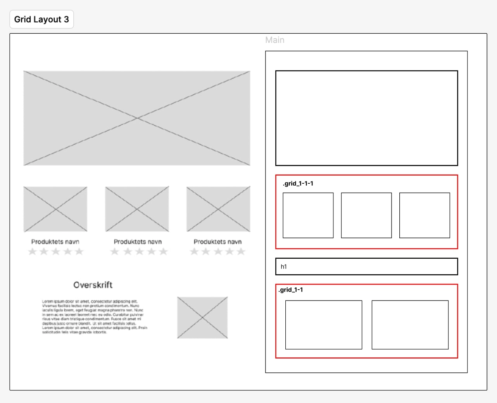

Temaet
I tema 2 arbejdede jeg med grundlæggende webudvikling med fokus på HTML og CSS. Temaet handlede om at opbygge websites fra bunden og få en forståelse for, hvordan indhold struktureres korrekt. Der blev arbejdet med wireframes og layoutdiagrammer som en del af processen for at skabe overblik over sidens opbygning, inden kodningen begyndte.
